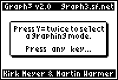

Graph3 v1.9
by Kirk Meyer & Martin Warmer
Graph3 adds a 3D grapher and a differential equation grapher to your TI-83+, TI-83+ Silver Edition, TI-84+ or TI-84+ Silver Edition. The 3D grapher is faster than the TI-89’s built-in grapher. It features rotation, zooming, tracing, and more. It also draws either wireframe or hidden surface plots. The differential equation grapher features the Runge-Kutta method, slope fields and more.

Send the "graph3.8xk" file to your calculator using a graph link. You must have a link; applications cannot be typed in by hand.
To install, press [APPS] and then select "Graph3" from the list. A message box will popup, instructing you on how to proceed. (If you have other graphing applications installed, for example, Inequality or Transformation graphing, you will be asked to uninstall them.)
Graph3 is not compatible with programs such as Inequality Graphing or Transformation Graphing. If you have these applications installed, Graph3 will request that you uninstall them in order to proceed. Graph3 may be installed at the same time as Symbolic and Omnicalc. However, for compatibilty reasons, it does not allow you to enter their tokens into the Z= equation.
To enter the graphing modes, press [Y=] twice. A menu will popup where you can choose to enter Differential Equation or 3D graphing mode. You will remain in the selected mode until you push a key that exits graph mode (examples: [2nd]QUIT, program editor, memory check, etc). Graphing is very similar to the normal function graphing on the 83+, with the following differences:
There are also the following additional features:
To uninstall, simply run the application again (from the [APPS] menu). It should display a message indicating that it has been installed.
| IMPORTANT: | Some applications will offer to uninstall Graph3. This will probably work, but it would be better to uninstall it yourself. |
| v1.9 | Differential Equation support added by Martin Warmer, done as a project for the Google Summer of Code. License changed to MIT License. |
| v1.1 | The application's name has been changed to "Graph3" to fix compatibility problems with the TI-84. Source code is also included with this version. |
| v1.0 | Many bugs fixed, including compatibility problems with OS version 1.13. Tracing problem also fixed. Added a few minor features and another easter egg (yes, there are two now). |
| v0.9 | Initial release. |
Thanks go out to...
Other people who have made suggestions and reported bugs so far:
Copyright (c) 2007 Detached Solutions
Permission is hereby granted, free of charge, to any person obtaining a copy of this software and associated documentation files (the "Software"), to deal in the Software without restriction, including without limitation the rights to use, copy, modify, merge, publish, distribute, sublicense, and/or sell copies of the Software, and to permit persons to whom the Software is furnished to do so, subject to the following conditions:
The above copyright notice and this permission notice shall be included in all copies or substantial portions of the Software.
THE SOFTWARE IS PROVIDED "AS IS", WITHOUT WARRANTY OF ANY KIND, EXPRESS OR IMPLIED, INCLUDING BUT NOT LIMITED TO THE WARRANTIES OF MERCHANTABILITY, FITNESS FOR A PARTICULAR PURPOSE AND NONINFRINGEMENT. IN NO EVENT SHALL THE AUTHORS OR COPYRIGHT HOLDERS BE LIABLE FOR ANY CLAIM, DAMAGES OR OTHER LIABILITY, WHETHER IN AN ACTION OF CONTRACT, TORT OR OTHERWISE, ARISING FROM, OUT OF OR IN CONNECTION WITH THE SOFTWARE OR THE USE OR OTHER DEALINGS IN THE SOFTWARE.